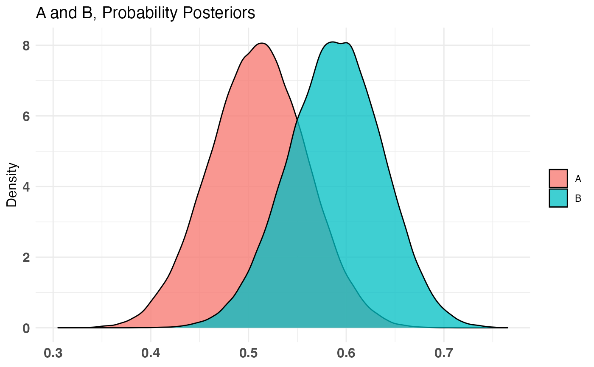
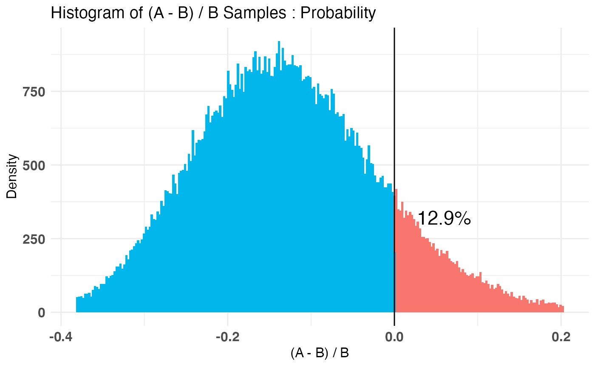
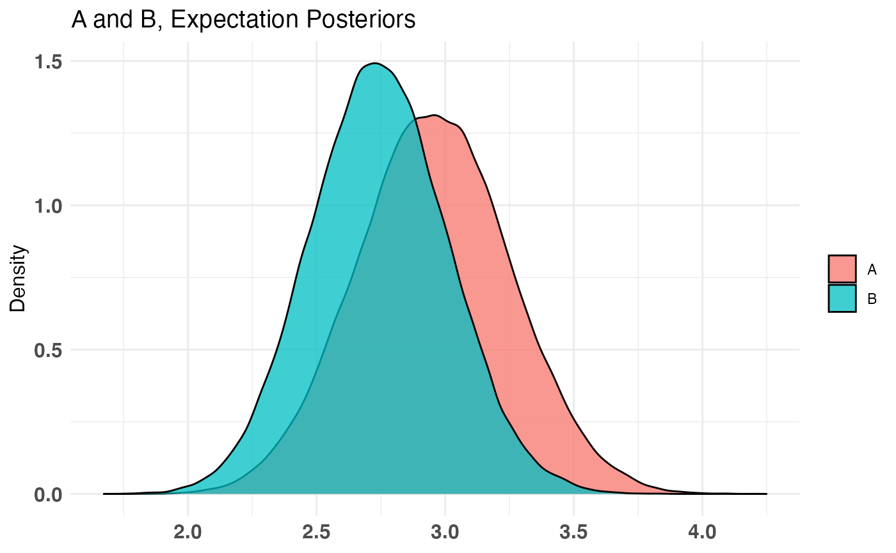
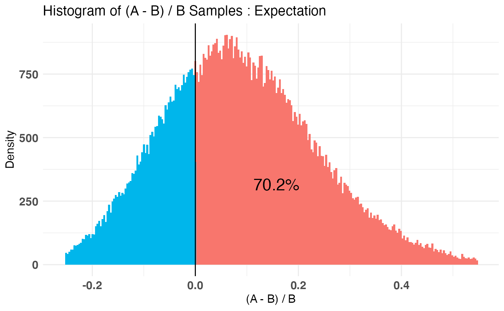

This function fits a Bayesian model to your A/B testing sample data. See Details for more information on usage.
bayesTest( A_data, B_data, priors, n_samples = 1e+05, distribution = c("bernoulli", "normal", "lognormal", "poisson", "exponential", "uniform", "bernoulliC", "poissonC") )
Arguments
| A_data | Vector of collected samples from recipe A |
|---|---|
| B_data | Vector of collected samples from recipe B |
| priors | Named vector or named list providing priors as required by the specified distribution:
See plotDistributions or the Note section of this help document for more info. |
| n_samples | Number of posterior samples to draw. Should be large enough for the distribution to converge. 1e5 is a good rule of thumb. Not used for closed form tests. |
| distribution | Distribution of underlying A/B test data. |
Value
A bayesTest object of the appropriate distribution class.
Details
bayesTest is the main driver function of the bayesAB package. The input takes two vectors of data,
corresponding to recipe A and recipe B of an A/B test. Order does not matter, except for interpretability of the final
plots and intervals/point estimates. The Bayesian model for each distribution uses conjugate priors which must
be specified at the time of invoking the function. Currently, there are eight supported distributions for the underlying data:
Bernoulli: If your data is well modeled by 1s and 0s, according to a specific probability
pof a 1 occurringData must be in a {0, 1} format where 1 corresponds to a 'success' as per the Bernoulli distribution
Uses a conjugate
Betadistribution for the parameter p in the Bernoulli distributionalphaandbetamust be set for a prior distribution over palpha = 1, beta = 1 can be used as a diffuse or uniform prior
Normal: If your data is well modeled by the normal distribution, with parameters \(\mu\), \(\sigma^2\) controlling mean and variance of the underlying distribution
Uses a conjugate
NormalInverseGammadistribution for the parameters \(\mu\) and \(\sigma^2\) in the Normal Distribution.mu,lambda,alpha, andbetamust be set for prior distributions over \(\mu, \sigma^2\) in accordance with the parameters of the conjugate prior distributions:\(\mu, \sigma^2\) ~ NormalInverseGamma(mu, lambda, alpha, beta)
This is a bivariate distribution (commonly used to model mean and variance of the normal distribution). You may want to experiment with both this distribution and the
plotNormalandplotInvGammaoutputs separately before arriving at a suitable set of priors for the Normal and LogNormalbayesTest
.
LogNormal: If your data is well modeled by the log-normal distribution, with parameters \(\mu\), \(\sigma^2\) as the parameters of the corresponding log-normal distribution (log of data is ~ N(\(\mu\), \(\sigma^2\)))
The Bayesian model requires same conjugate priors on \(\mu\), \(\sigma^2\) as for the Normal Distribution priors
Note: The \(\mu\) and \(\sigma^2\) are not the mean/variance of lognormal numbers themselves but are rather the corresponding parameters of the lognormal distribution. Thus, posteriors for the statistics 'Mean' and 'Variance' are returned alongside 'Mu' and 'Sig_Sq' for interpretability.
Poisson: If your data is well modeled by the Poisson distribution, with parameter \(\lambda\) controlling the average number of events per interval.
Data must be strictly integral or 0.
Uses a conjugate
Gammadistribution for the parameter \(\lambda\) in the Poisson Distributionshapeandratemust be set for prior distribution over \(\lambda\)
Exponential: If your data is well modeled by the Exponential distribution, with parameter \(\lambda\) controlling the rate of decay.
Data must be strictly >= 0
Uses a conjugate
Gammadistribution for the parameter \(\lambda\) in the Exponential Distributionshapeandratemust be set for prior distribution over \(\lambda\)
Uniform: If your data is well modeled by the Uniform distribution, with parameter \(\theta\) controlling the max value.
For example, estimating max/total inventory size from individually numbered snapshots
Data must be strictly > 0
Uses a conjugate
Paretodistribution for the parameter \(\theta\) in the Uniform(0, \(\theta\)) Distributionxmandalphamust be set for prior distribution over \(\theta\)
BernoulliC: Closed form (computational) calculation of the 'bernoulli' bayesTest. Same priors are required.
PoissonC: Closed form (computational) calculation of the 'poisson' bayesTest. Same priors are required.
Note
For 'closed form' tests, you do not get a distribution over the posterior, but simply P(A > B) for the parameter in question.
Choosing priors correctly is very important. Please see http://fportman.com/writing/bayesab-0-dot-7-0-plus-a-primer-on-priors/ for a detailed example of choosing priors within bayesAB. Here are some ways to leverage objective/diffuse (assigning equal probability to all values) priors:
Gamma(eps, eps) ~Gamma(.00005, .00005) will be effectively diffuseInvGamma(eps, eps) ~InvGamma(.00005, .00005) will be effectively diffusePareto(eps, eps) ~Pareto(.005, .005) will be effectively diffuse
Keep in mind that the Prior Plots for bayesTest's run with diffuse priors may not plot correctly as they will not be truncated as they approach infinity. See plot.bayesTest for how to turn off the Prior Plots.
Examples
A_binom <- rbinom(100, 1, .5) B_binom <- rbinom(100, 1, .6) A_norm <- rnorm(100, 6, 1.5) B_norm <- rnorm(100, 5, 2.5) AB1 <- bayesTest(A_binom, B_binom, priors = c('alpha' = 1, 'beta' = 1), distribution = 'bernoulli') AB2 <- bayesTest(A_norm, B_norm, priors = c('mu' = 5, 'lambda' = 1, 'alpha' = 3, 'beta' = 1), distribution = 'normal') print(AB1)#> -------------------------------------------- #> Distribution used: bernoulli #> -------------------------------------------- #> Using data with the following properties: #> A B #> Min. 0.00 0.00 #> 1st Qu. 0.00 0.00 #> Median 1.00 1.00 #> Mean 0.51 0.59 #> 3rd Qu. 1.00 1.00 #> Max. 1.00 1.00 #> -------------------------------------------- #> Conjugate Prior Distribution: Beta #> Conjugate Prior Parameters: #> $alpha #> [1] 1 #> #> $beta #> [1] 1 #> #> -------------------------------------------- #> Calculated posteriors for the following parameters: #> Probability #> -------------------------------------------- #> Monte Carlo samples generated per posterior: #> [1] 1e+05#> Quantiles of posteriors for A and B: #> #> $Probability #> $Probability$A #> 0% 25% 50% 75% 100% #> 0.3050392 0.4765097 0.5101361 0.5433502 0.7058943 #> #> $Probability$B #> 0% 25% 50% 75% 100% #> 0.3840085 0.5558781 0.5891831 0.6215969 0.7651442 #> #> #> -------------------------------------------- #> #> P(A > B) by (0)%: #> #> $Probability #> [1] 0.12877 #> #> -------------------------------------------- #> #> Credible Interval on (A - B) / B for interval length(s) (0.9) : #> #> $Probability #> 5% 95% #> -0.3013046 0.0671958 #> #> -------------------------------------------- #> #> Posterior Expected Loss for choosing A over B: #> #> $Probability #> [1] 0.1730265 #>#> Quantiles of posteriors for A and B: #> #> $Mu #> $Mu$A #> 0% 25% 50% 75% 100% #> 5.024249 5.687412 5.797541 5.908566 6.633358 #> #> $Mu$B #> 0% 25% 50% 75% 100% #> 3.560132 4.500807 4.662241 4.823334 5.668705 #> #> #> $Sig_Sq #> $Sig_Sq$A #> 0% 25% 50% 75% 100% #> 1.600917 2.481718 2.717868 2.987543 5.043086 #> #> $Sig_Sq$B #> 0% 25% 50% 75% 100% #> 2.921279 5.260815 5.765309 6.330334 12.607350 #> #> #> -------------------------------------------- #> #> P(A > B) by (0, 0)%: #> #> $Mu #> [1] 0.99992 #> #> $Sig_Sq #> [1] 6e-05 #> #> -------------------------------------------- #> #> Credible Interval on (A - B) / B for interval length(s) (0.9, 0.9) : #> #> $Mu #> 5% 95% #> 0.1314969 0.3735846 #> #> $Sig_Sq #> 5% 95% #> -0.6575349 -0.3498678 #> #> -------------------------------------------- #> #> Posterior Expected Loss for choosing A over B: #> #> $Mu #> [1] 9.958718e-07 #> #> $Sig_Sq #> [1] 1.160469 #># Create a new variable that is the probability multiiplied # by the normally distributed variable (expected value of something) # \donttest{ AB3 <- combine(AB1, AB2, f = `*`, params = c('Probability', 'Mu'), newName = 'Expectation') print(AB3)#> -------------------------------------------- #> Distribution used: combined #> -------------------------------------------- #> Using data with the following properties: #> A A B B #> Min. 0.00 1.176745 0.00 -1.072131 #> 1st Qu. 0.00 4.861744 0.00 2.776056 #> Median 1.00 5.812363 1.00 4.698421 #> Mean 0.51 5.806081 0.59 4.657710 #> 3rd Qu. 1.00 6.824265 1.00 6.359395 #> Max. 1.00 10.239511 1.00 10.184893 #> -------------------------------------------- #> Conjugate Prior Distribution: #> Conjugate Prior Parameters: #> [1] "Combined distributions have no priors. Inspect each element separately for details." #> -------------------------------------------- #> Calculated posteriors for the following parameters: #> Expectation #> -------------------------------------------- #> Monte Carlo samples generated per posterior: #> [1] 1e+05#> Quantiles of posteriors for A and B: #> #> $Expectation #> $Expectation$A #> 0% 25% 50% 75% 100% #> 1.793998 2.754389 2.955080 3.157080 4.248440 #> #> $Expectation$B #> 0% 25% 50% 75% 100% #> 1.673115 2.562234 2.740720 2.920986 4.081985 #> #> #> -------------------------------------------- #> #> P(A > B) by (0)%: #> #> $Expectation #> [1] 0.70233 #> #> -------------------------------------------- #> #> Credible Interval on (A - B) / B for interval length(s) (0.9) : #> #> $Expectation #> 5% 95% #> -0.1490425 0.3587822 #> #> -------------------------------------------- #> #> Posterior Expected Loss for choosing A over B: #> #> $Expectation #> [1] 0.02925005 #># }